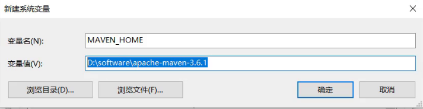
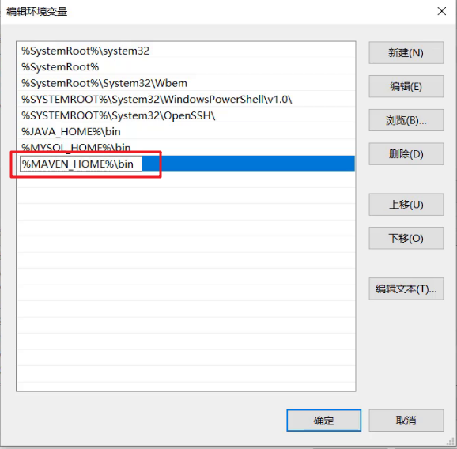
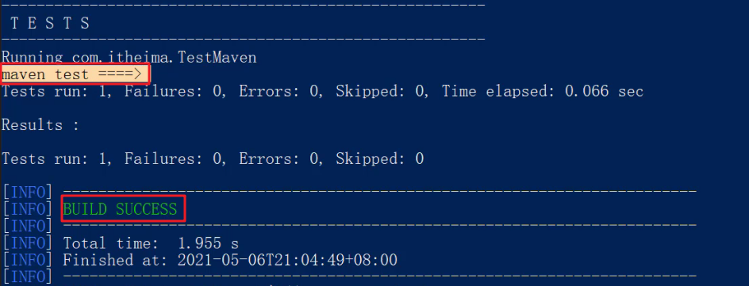
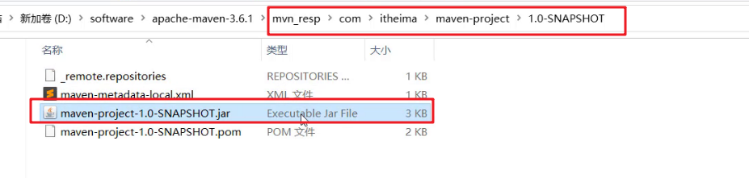
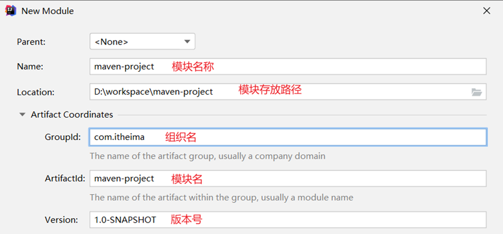
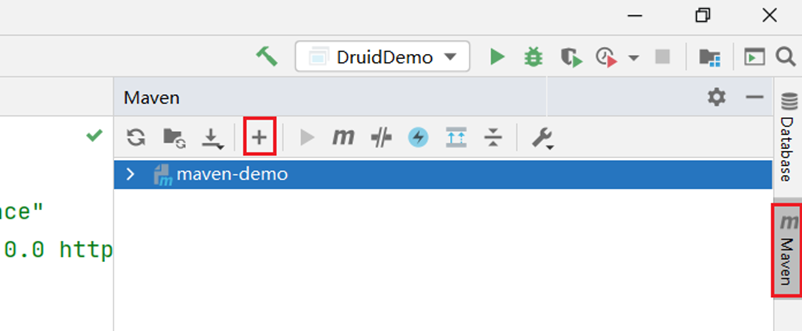
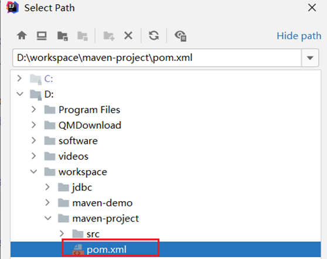
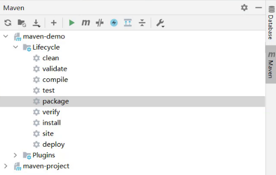
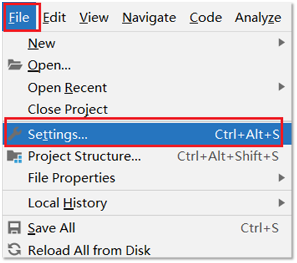

Maven
Maven是专门用于管理和构建Java项目的工具，它的主要功能有：
提供了一套标准化的项目结构
提供了一套标准化的构建流程（编译，测试，打包，发布……）
提供了一套依赖管理机制
标准化的项目结构：
项目结构我们都知道，每一个开发工具（IDE）都有自己不同的项目结构，它们互相之间不通用。我再eclipse中创建的目录，无法在idea中进行使用，这就造成了很大的不方便，如下图:前两个是以后开发经常使用的开发工具

而Maven提供了一套标准化的项目结构，所有的IDE使用Maven构建的项目完全一样，所以IDE创建的Maven项目可以通用。如下图右边就是Maven构建的项目结构。

标准化的构建流程：

如上图所示我们开发了一套系统，代码需要进行编译、测试、打包、发布，这些操作如果需要反复进行就显得特别麻烦，而Maven提供了一套简单的命令来完成项目构建。
依赖管理：
依赖管理其实就是管理你项目所依赖的第三方资源（jar包、插件）。如之前我们项目中需要使用JDBC和Druid的话，就需要去网上下载对应的依赖包（当前之前是老师已经下载好提供给大家了），复制到项目中，还要将jar包加入工作环境这一系列的操作。如下图所示
而Maven使用标准的 ==坐标== 配置来管理各种依赖，只需要简单的配置就可以完成依赖管理。

如上图右边所示就是mysql驱动包的坐标，在项目中只需要写这段配置，其他都不需要我们担心，Maven都帮我们进行操作了。
市面上有很多构建工具，而Maven依旧还是主流构建工具，如下图是常用构建工具的使用占比

1.1 Maven简介
==Apache Maven== 是一个项目管理和构建==工具==，它基于项目对象模型(POM)的概念，通过一小段描述信息来管理项目的构建、报告和文档。
通过上面的描述大家只需要知道Maven是一个工具即可。Apache 是一个开源组织，将来我们会学习很多Apache提供的项目。
1.1.1 Maven模型
- 项目对象模型 (Project Object Model)
- 依赖管理模型(Dependency)
- 插件(Plugin)

如上图所示就是Maven的模型，而我们先看紫色框框起来的部分，他就是用来完成 标准化构建流程 。如我们需要编译，Maven提供了一个编译插件供我们使用，我们需要打包，Maven就提供了一个打包插件提供我们使用等。

上图中紫色框起来的部分，项目对象模型就是将我们自己抽象成一个对象模型，有自己专属的坐标，如下图所示是一个Maven项目：

依赖管理模型则是使用坐标来描述当前项目依赖哪儿些第三方jar包，如下图所示

上述Maven模型图中还有一部分是仓库。如何理解仓库呢？
1.1.2 仓库
大家想想这样的场景，我们创建Maven项目，在项目中使用坐标来指定项目的依赖，那么依赖的jar包到底存储在什么地方呢？其实依赖jar包是存储在我们的本地仓库中。而项目运行时从本地仓库中拿需要的依赖jar包。
仓库分类：
本地仓库：自己计算机上的一个目录
中央仓库：由Maven团队维护的全球唯一的仓库
远程仓库(私服)：一般由公司团队搭建的私有仓库
今天我们只学习远程仓库的使用，并不会搭建。
当项目中使用坐标引入对应依赖jar包后，首先会查找本地仓库中是否有对应的jar包：
如果有，则在项目直接引用;
如果没有，则去中央仓库中下载对应的jar包到本地仓库。

如果还可以搭建远程仓库，将来jar包的查找顺序则变为：
本地仓库 –> 远程仓库–> 中央仓库

1.2 Maven安装配置
解压 apache-maven-3.6.1.rar 既安装完成
建议解压缩到没有中文、特殊字符的路径下。如课程中解压缩到
D:\software下。解压缩后的目录结构如下：

- bin目录 ： 存放的是可执行命令。mvn 命令重点关注。
- conf目录 ：存放Maven的配置文件。
settings.xml配置文件后期需要修改。 - lib目录 ：存放Maven依赖的jar包。Maven也是使用java开发的，所以它也依赖其他的jar包。
配置环境变量 MAVEN_HOME 为安装路径的bin目录
此电脑右键 –>高级系统设置–>高级–>环境变量在系统变量处新建一个变量
MAVEN_HOME在
Path中进行配置打开命令提示符进行验证，出现如图所示表示安装成功

配置本地仓库
修改 conf/settings.xml 中的
为一个指定目录作为本地仓库，用来存储jar包。 
配置阿里云私服
中央仓库在国外，所以下载jar包速度可能比较慢，而阿里公司提供了一个远程仓库，里面基本也都有开源项目的jar包。
修改 conf/settings.xml 中的
标签，为其添加如下子标签： <mirror> <id>alimaven</id> <name>aliyun maven</name> <url>http://maven.aliyun.com/nexus/content/groups/public/</url> <mirrorOf>central</mirrorOf> </mirror>
1.3 Maven基本使用
1.3.1 Maven 常用命令
compile ：编译
clean：清理
test：测试
package：打包
install：安装
命令演示：
在 资料\代码\maven-project 提供了一个使用Maven构建的项目，项目结构如下：

而我们使用上面命令需要在磁盘上进入到项目的 pom.xml 目录下，打开命令提示符

编译命令演示：
compile ：编译执行上述命令可以看到：
- 从阿里云下载编译需要的插件的jar包，在本地仓库也能看到下载好的插件
- 在项目下会生成一个
target目录

同时在项目下会出现一个 target 目录，编译后的字节码文件就放在该目录下

清理命令演示：
mvn clean执行上述命令可以看到
- 从阿里云下载清理需要的插件jar包
- 删除项目下的
target目录

打包命令演示：
mvn package执行上述命令可以看到：
- 从阿里云下载打包需要的插件jar包
- 在项目的
terget目录下有一个jar包（将当前项目打成的jar包）

测试命令演示：
mvn test 该命令会执行所有的测试代码。执行上述命令效果如下
安装命令演示：
mvn install该命令会将当前项目打成jar包，并安装到本地仓库。执行完上述命令后到本地仓库查看结果如下：
1.3.2 Maven 生命周期
Maven 构建项目生命周期描述的是一次构建过程经历经历了多少个事件
Maven 对项目构建的生命周期划分为3套：
- clean ：清理工作。
- default ：核心工作，例如编译，测试，打包，安装等。
- site ： 产生报告，发布站点等。这套声明周期一般不会使用。
同一套生命周期内，执行后边的命令，前面的所有命令会自动执行。例如默认（default）生命周期如下：

当我们执行 install（安装）命令时，它会先执行 compile命令，再执行 test 命令，再执行 package 命令，最后执行 install 命令。
当我们执行 package （打包）命令时，它会先执行 compile 命令，再执行 test 命令，最后执行 package 命令。
默认的生命周期也有对应的很多命令，其他的一般都不会使用，我们只关注常用的：

1.4 IDEA使用Maven
以后开发中我们肯定会在高级开发工具中使用Maven管理项目，而我们常用的高级开发工具是IDEA，所以接下来我们会讲解Maven在IDEA中的使用。
1.4.1 IDEA配置Maven环境
我们需要先在IDEA中配置Maven环境：
选择 IDEA中 File –> Settings
搜索 maven

设置 IDEA 使用本地安装的 Maven，并修改配置文件路径

1.4.2 Maven 坐标详解
什么是坐标？
- Maven 中的坐标是==资源的唯一标识==
- 使用坐标来定义项目或引入项目中需要的依赖
Maven 坐标主要组成
- groupId：定义当前Maven项目隶属组织名称（通常是域名反写，例如：com.itheima）
- artifactId：定义当前Maven项目名称（通常是模块名称，例如 order-service、goods-service）
- version：定义当前项目版本号
如下图就是使用坐标表示一个项目：

==注意：==
- 上面所说的资源可以是插件、依赖、当前项目。
- 我们的项目如果被其他的项目依赖时，也是需要坐标来引入的。
1.4.3 IDEA 创建 Maven项目
创建模块，选择Maven，点击Next

填写模块名称，坐标信息，点击finish，创建完成
创建好的项目目录结构如下：

编写 HelloWorld，并运行
1.4.4 IDEA 导入 Maven项目
大家在学习时可能需要看老师的代码，当然也就需要将老师的代码导入到自己的IDEA中。我们可以通过以下步骤进行项目的导入：
选择右侧Maven面板，点击 + 号
选中对应项目的pom.xml文件，双击即可
如果没有Maven面板，选择
View –> Appearance –> Tool Window Bars

可以通过下图所示进行命令的操作：
配置 Maven-Helper 插件
选择 IDEA中 File –> Settings

选择 Plugins

搜索 Maven，选择第一个 Maven Helper，点击Install安装，弹出面板中点击Accept

重启 IDEA
安装完该插件后可以通过 选中项目右键进行相关命令操作，如下图所示：

1.5 依赖管理
1.5.1 使用坐标引入jar包
使用坐标引入jar包的步骤：
在项目的 pom.xml 中编写
标签 在
标签中 使用 引入坐标 定义坐标的 groupId，artifactId，version

点击刷新按钮，使坐标生效

注意：
- 具体的坐标我们可以到如下网站进行搜索
- https://mvnrepository.com/
快捷方式导入jar包的坐标：
每次需要引入jar包，都去对应的网站进行搜索是比较麻烦的，接下来给大家介绍一种快捷引入坐标的方式
在 pom.xml 中 按 alt + insert，选择 Dependency

在弹出的面板中搜索对应坐标，然后双击选中对应坐标

点击刷新按钮，使坐标生效
自动导入设置：
上面每次操作都需要点击刷新按钮，让引入的坐标生效。当然我们也可以通过设置让其自动完成
选择 IDEA中 File –> Settings
在弹出的面板中找到 Build Tools

选择 Any changes，点击 ok 即可生效
1.5.2 依赖范围
通过设置坐标的依赖范围(scope)，可以设置 对应jar包的作用范围：编译环境、测试环境、运行环境。
如下图所示给 junit 依赖通过 scope 标签指定依赖的作用范围。 那么这个依赖就只能作用在测试环境，其他环境下不能使用。

那么 scope 都可以有哪些取值呢？
| 依赖范围 | 编译classpath | 测试classpath | 运行classpath | 例子 |
|---|---|---|---|---|
| compile | Y | Y | Y | logback |
| test | - | Y | - | Junit |
| provided | Y | Y | - | servlet-api |
| runtime | - | Y | Y | jdbc驱动 |
| system | Y | Y | - | 存储在本地的jar包 |
- compile ：作用于编译环境、测试环境、运行环境。
- test ： 作用于测试环境。典型的就是Junit坐标，以后使用Junit时，都会将scope指定为该值
- provided ：作用于编译环境、测试环境。我们后面会学习
servlet-api，在使用它时，必须将scope设置为该值，不然运行时就会报错 - runtime ： 作用于测试环境、运行环境。jdbc驱动一般将
scope设置为该值，当然不设置也没有任何问题
注意：
- 如果引入坐标不指定
scope标签时，默认就是 compile 值。以后大部分jar包都是使用默认值。